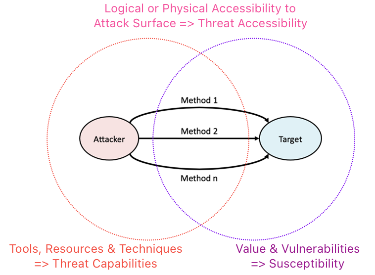
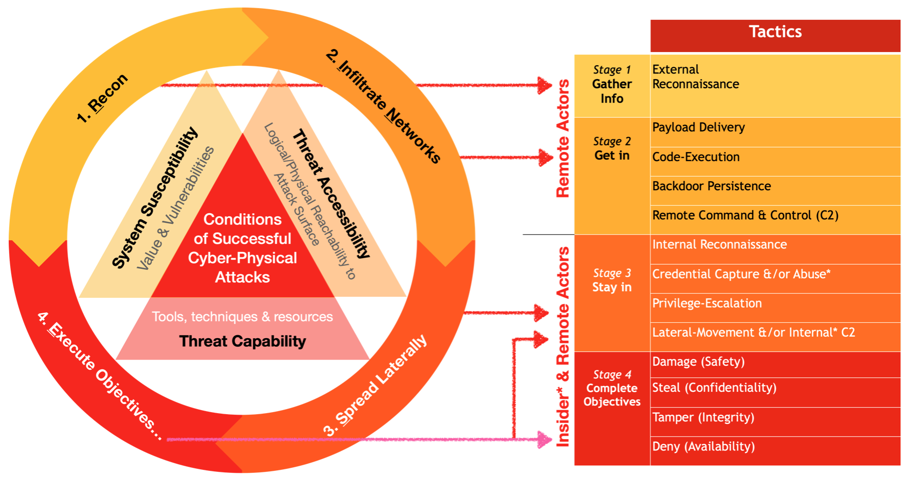
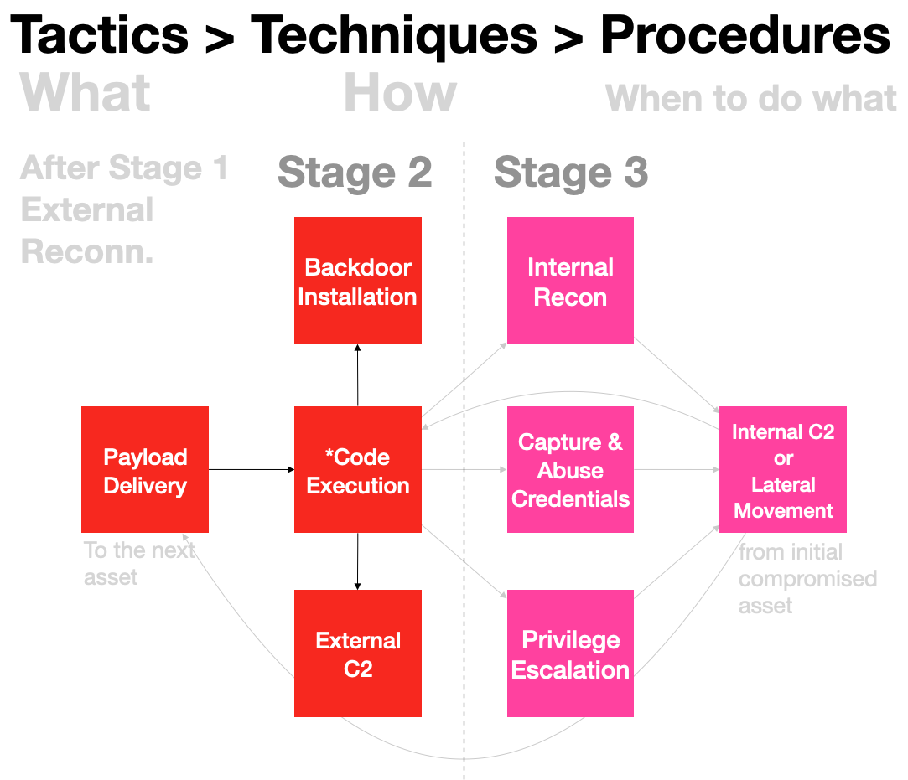

Tactics Techniques & Procedures
What is Tactics Techniques & Procedures?
Before accomplishing a broad objective like "make more money", we often need to break it down to smaller parts or sub-objectives. It's the same for online criminals who want to steal or extort from victims.
- Think of Tactics as the sub-objectives, the WHATs (needs to be done) related to the main objective of let's say extortion through ransomware.
- Techniques would be the skills and the HOWs (doing) related to those sub-objectives. With a ransomware campaign, it won't make sense just to lock a single workstation, it takes skills to install ransomware across the whole network.
- Procedures would be knowing WHEN to do what. So let's say some ransomware gang gets into a vulnerable VPN server, then what's next? Is denying access to workstations to get victims' attention enough, maybe they need to find where are the backup servers, important files, extract them out of the network for a "double-extortion" & so on!
Why is TTP important?
Sun Tzu: "If you know the enemy and know yourself, you need not fear the result of a hundred battles. If you know yourself but not the enemy, for every victory gained you will also suffer a defeat. If you know neither the enemy nor yourself, you will succumb in every battle"
Without awareness of adversarial TTP:
- Impossible to defend proactively & reacting to incidents (those with some degree of self-awareness, implemented some controls but don't know about enemies).
- Don't even know attacks are happening (for those who don't know about self AND enemies).
Relationship with Attack Life Cycle
Attack Life Cycle mental model provides a big picture view, & how different phases of attacks are related to the three necessary & sufficient conditions. Attacks are successful when attackers can use accessible methods (intersection between Threat Capabilities & Target Susceptibility) to reach the intended targets:

With so many methods under the sun, how can we generalise into a mental model that is useful? We need to somehow group methods into tactics to know what exactly are the methods for?

Tactics within stage 1 to 3 are the sub-objectives for the final objectives of Damaging, Stealing, Tampering & Denial.
- Stage 1 & 2 are meant for remote Threat Actors since Insiders typically have direct access to resources
- Procedures in TTP refers to the sequence of techniques to chained together
- When attackers are undetected, they spread deeper (like cancers) into compromised networks & ultimately complete offensive objectives.
- Stage 1 directly to 4 happens with low hanging fruits like poor configurations, exposed service network ports with default, stolen or weak passwords, attackers get lucky & completes objectives without much effort.
Tactic needs Techniques
I will use a case study of a hypothetical law firm's Ransomware incident to illustrate the various offensive tactics:
| Tactics | Techniques & Tools | Vulnerabilities |
|---|---|---|
| External Recon (Gather Info) | A Ransomware targeting legal industry found Ace Legal LLP's support email credentials from a Dark Web forum exposure. |
Online services using just user-ID & password are susceptible to attacks like identity theft. |
| Payload Delivery (Get in) |
Using the stolen support credentials, attackers manage to use a Zero-Click vulnerability to deliver malware to Ace Legal support desktop computer that runs 24/7, without the need for any victim interaction. | There are a few Zero-Click Outlook vulnerabilities over the years. |
| Code Execution (Get in) |
Malicious software or malware launches unhindered within that desktop computer. The initial execution will typical download more payloads like backdoor installer & reports back to attackers' infrastructure known as Command & Control servers. |
Most Anti-Virus products are ineffective against custom malware used by organised & skilled criminals. |
| Remote Command & Control (C2) (Get in) |
A C2 server provides Threat Actors some form of C2 interface for them to remotely control the initial compromised asset, in this case the support desktop. | Firewalls may be useful for incoming blocks but most malware egress with HTTPS protocol, which is by default unblocked otherwise users within the network won't be able to use their web browsers. |
| Persistent Backdoor (Get in) |
There's a chance of shutting down or reboot for computers or any networked electronic device. A backdoor is a special malware that lets attackers resume C2 session even after a reboot. |
Many businesses DON'T have the budget for security monitoring service. It is almost certain that criminals will test their payloads against popular security products before a campaign. This means most backdoors are installed without being detected. At this point, attackers is ready to move on to the next stage of Attack Life Cycle: Spreading Laterally! |
| Internal Recon (Stay in) |
Ace Legal's support desktop computer was connected to their file cum printer server. Threat Actors did not bother to scan further since they found the file server that had lots of archived documents. |
It was a lucky day for this ransomware gang since that computer connects directly to file server that archives. |
| Credential Capture or Abuse (Stay in) |
Since it was a small network of 5 computers, there wasn't a Domain Controller or Domain Administrator as targets. | The support terminal was NOT used to access their Practice Management Software-as-a-Service portal, otherwise attackers could steal session token & assume access into more sensitive information. |
| Privilege-Escalation (Stay in) |
Attackers easily escalate to Local Admin & starts another privileged session & installs a new backdoor with higher privilege. | Everyone was using accounts that are in the Local Administrator group but... |
| Lateral Movement or Internal C2 (Stay in) |
Lateral Movement in simple terms is about attackers moving from one compromised asset to another. With the stolen support account credentials, easily access their file servers. |
Fortunately for Ace Legal, all other laptops within the network was either sleeping or out of premise for most of the time. In the case of Ace Legal, the network is a simple small network. The attackers did not bother to stay within for too long. |
| Steal files & Deny Access (Complete Objectives) |
Double-extortion is a means to coerce victims who refuse to pay to unlock their assets by threatening to reveal or sell stolen files in the public or underground forums. | Ace Legal used a strong password convention on all archived documents. So the stolen files are inaccessible. Only support desktop was locked by the ransomware. The victims did not bother to pay up since their IT service provider managed to recover it quickly & changed support account password. |
Visualising Procedures
In a complex network, attackers often have to decide what's their next move & this pattern tend to repeat as a series of attacks:
Attacker -method1-> Target1 -method2-> Target2... TargetN
When we visualise the tactics as a flow, it looks like this:

- At Stage 2, the whole point is gain initial C2 & install backdoor so that sessions can resume after device reboots, because they need to Stay in Stage 3!
- Once those two sub-objectives are met, attackers can start internal survey, typically with the immediate compromised asset like checking what kind of accounts are available, any credentials or session tokens to extract & so on.
- Privilege Escalation is useful (e.g. extract more sensitive data from device) but not always possible especially when there isn't any escalation related vulnerabilities.
- Attackers also often look at network routing information within the initial host or device, before scanning the network for other useful assets.
- Moving laterally can be achieved by sending malicious payloads to more assets, causing Code-Execution or when privilege account captured, one can simply issue native commands to control target assets.
*Code-Execution is essential for all other tactical aspects, even the initial asset to the next, other than abusing captured credentials, Code-Execution is usually the result of internal Payload Delivery, similar to what was described in detail in the earlier Hack-in-the-Box sample report.
Which is why the topic of Code-Execution deserves a Mental Model on its own...